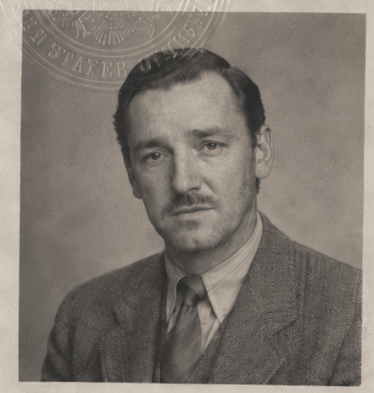
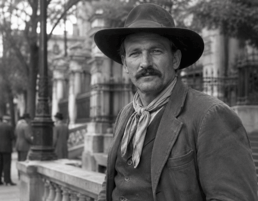
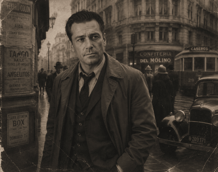
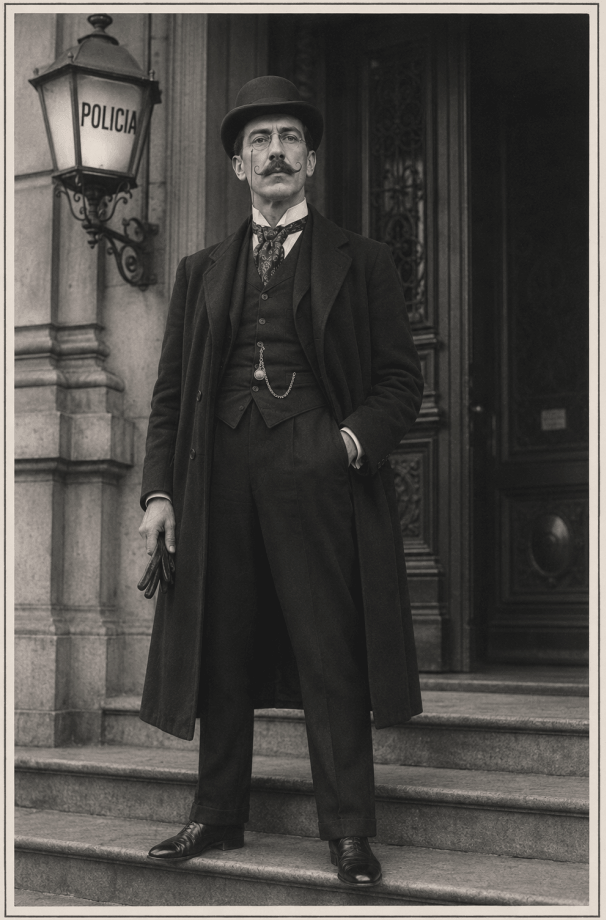
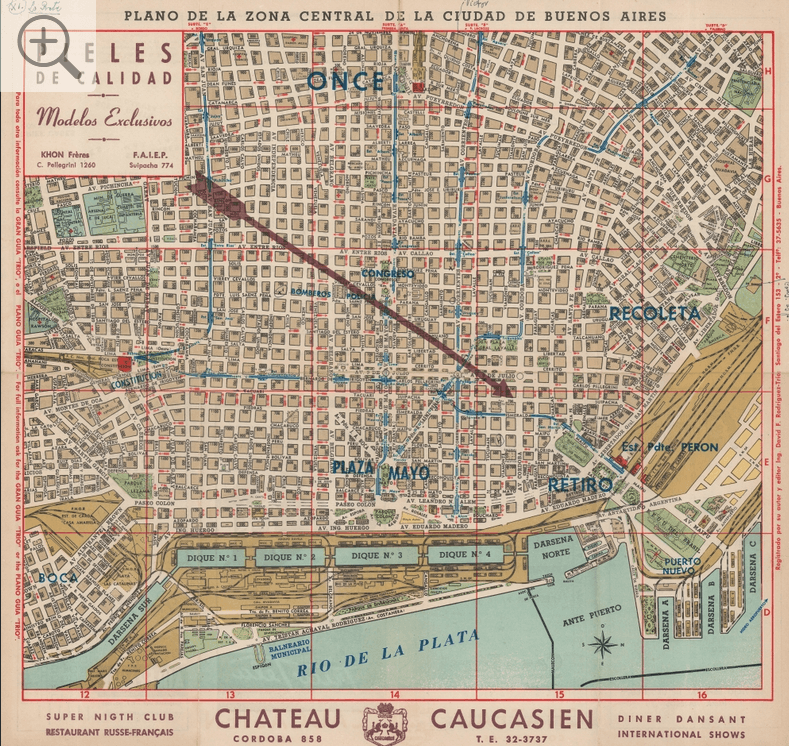
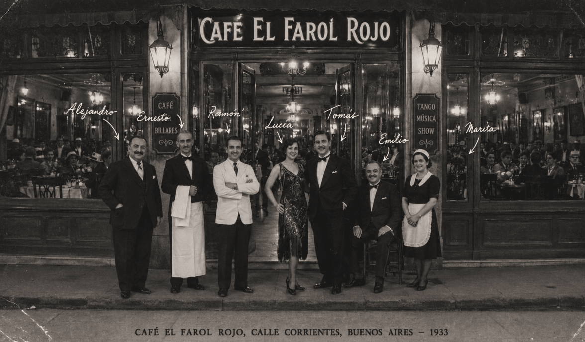

The Daredevils
in
Bloodlust
of the
Lobopardo
Confidential · Buenos Aires, Argentina · 1933
Players

Age 41
- Former WWI military pilot
- Slight limp
- Smokes cigarettes
- Freelance mechanic and electrician, takes local jobs as needed
- Free spirit, doesn't like being locked down
- Lives in girlfriend's apartment
Roscoe Willy Butterfield
Bryce
- Known from the Aerodrome
- Bookish, minor interest in the occult
- Works for Aeroposta Argentina, S.A.

Alex
- A gaucho, skilled horseman and rugged outdoorsman of the Argentine plains
- Minor interest in the occult
- Ambulance driver by trade

Dwayne
- Known through mutual friendship with Martin Michael Cole-Houston
- American cop, on vacation
NPCs
Juan
Pedro's co-worker
- Pedro's only notable friend

Police contact
- Frank's contact at the police station
- Hangs out at a local bar in the evenings
City
"The Paris of South America"

Notes
- Buenos Aires, Argentina — 1933
- 1930 military coup overthrew President Hipólito Yrigoyen; political tension and unrest continue
Locations
Salon Marabu
Fancy club
Cabaret Chantecler
- Two tickets from Martin — good any day of the week
- Plan: take Nina on the 11th
Hotel Madagascar
- Martin Michael Cole-Houston lives here
La Lampara En La Noche
Antiquarian books & occult works
- Defensa 456, Buenos Aires

Cafe El Farol Rojo
Tango, música, show
Staff & regulars
Luica
Tango dancer
Tomas
Tango dancer
Emilio
Pianist, band leader
- Old man
- Sees everything, picks up everything
- Looks thirsty
Ernesto
Head waiter
- Extremely professional
- Steward of the Waiters union
- Always busy
Ramon
Bartender
- Listens to everything, pretends to hear nothing
Alejandro
Cafe owner
- Italian
Marita
Cigarette girl
Newspapers
El Diario — Monday, August 7, 1933
El Diario — Tuesday, August 8, 1933
Date tracking
| Day | Date | Event |
|---|---|---|
| Day 1 | August 7, 1933 | — |
| Day 2 | August 8, 1933 | — |
| Day 5 | August 11, 1933 | Date with Nina |
Note: Day 1 covers all events on August 7 up through breakfast. Day 2 begins at breakfast, August 8.
Session log
Body found
The body of a man was found in a disused lot in the La Boca neighbourhood near the docks yesterday afternoon.
The man was believed to have died 24–48 hours prior.
The man was mauled by animals, possibly feral dogs, which have become a problem in the area.
His body will be held for three days for identification and to determine a cause of death.
Day 1 — August 7, 1933
- Jack out with the boys (party) — Nina not present
- Get drunk together
- Watch a tango dance
- Fredo (shoeshine boy, associate of Roscoe) bursts in
- Reports another body found near the waterfront
- Party takes a taxi to the waterfront, quite drunk
- Investigates the second crime scene, warehouse/docks district
- Murder occurred just after 1 AM
- Local man reports seeing something "laying there and it was messy"
- Raquel Guerrico claims the body was mutilated
- Both victims were male
- Police officially rule "feral animal" — conclusion is questionable, and they seem to know it
- Claw marks found on building plaster: 4 marks, hand-shaped, much larger than a man's hand — suggests something climbed the wall
- Roscoe shows slight interest in the occult
- Party takes a taxi to the morgue
- Chat with ambulance drivers out front — Roy, an ambulance driver himself, connects with them
- Told the top part of the victim's skull was bitten off, opened like a can
Day 2 — August 8, 1933
- Party meets for breakfast at Cafe El Farol Rojo
- Roscoe and Roy go to the morgue
- Roy chats with an ambulance driver and convinces him to let him sneak a look at the body
- Victim identified as Luis Gomez, second victim
- Body ripped open from throat to stomach
- Large bite taken out of the head, brain chewed on
- Frank goes to the police station to meet Det. Supt. Dante Olmos-Rossi
- Detective states the first victim was Pedro Duerte
- Most police are rounding up radicals on behalf of the government, leaving the department short-staffed
- Detective gives Frank leeway to conduct a private investigation
- Only other clue: Luis was well dressed and well perfumed, carried more cash than a laborer should, and had a bloody note in his pocket reading "Bruno Denit, Av Pedro de Mer..."
- Party meets for lunch at Hotel Madagascar, where Martin lives
- Roy and Roscoe go to the occult bookstore, La Lampara En La Noche
- Roscoe inquires about occult books on South American mythology and folklore
- Frank and Jack go to interview Pedro's mother and sister
- Pedro's body was found near his family's third-floor apartment
- Sister claims Pedro is a good churchgoing man, doesn't associate with criminals
- His only notable friend is Juan, a co-worker
- Searched Pedro's room — found nothing
Steps for next session
- Interview Juan at the Forge
- Check out the site of Pedro's death for clues
- Frank wants to meet with the reporter
- Visit the docks during the daytime (the roof?)
- Visit the roommate, Ricardo Bianci (roommate of Luis Gomez)
- Try to match the map with the paper scrap